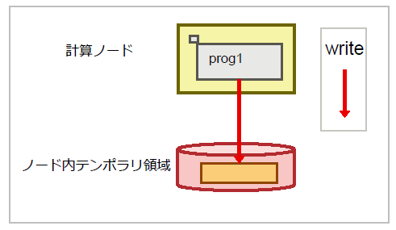

2. ストレージの概要¶
ストレージの概要について説明します。
2.1. ジョブ投入の流れ¶
利用者は、ログインノードにログインし、FEFSへのファイルの配置ならびにジョブの実行を依頼することにより、計算ノード側においてジョブを実行できます。
ジョブ実行中は、必要に応じてFEFSからファイルの読み書きを行います。
ジョブ終了後、利用者はログインノードからジョブ実行中に出力されたファイルを参照できます。
2.2. 「富岳」のストレージの構成概要¶
「富岳」のストレージは、高速アクセスを可能とする第1階層ストレージと、データ保管可能な第2階層ストレージから構成されています。

2.2.1. 「富岳」で利用可能なファイルシステム¶
「富岳」では、以下の2種類のファイルシステムを利用できます。
FEFS (Fujitsu Exabyte Filesystem)：第2階層ストレージ
「京」で開発されたファイルシステムであり、ディスク装置で構成されています。大容量のデータや長期保管するデータに適しています。
LLIO (Lightweight Layered IO-Accelerator)：第1階層ストレージ
ジョブ実行時の専用ファイルシステムであり、階層化ストレージの利用のしやすさとアプリケーションファイルの入出力の高速化を目指しています。SSDで構成され、用途に応じて3種類の領域を利用できます。
LLIOの領域¶ 領域
名前空間
用途
LLIOの第2階層キャッシュ領域
第2階層ファイルシステム
【保存ファイル】
第1階層ストレージ(LLIO)と第2階層ストレージ(FEFS)の2つから構成されます。ジョブ実行中に利用できるFEFSに対するキャッシュ機能です。
アプリケーションがファイルのREAD要求を発行した場合、LLIOがファイルデータを自動的に第2階層ストレージ(FEFS)から第1階層ストレージ(LLIO)に読み込み、キャッシングを行います。
アプリケーションがWRITE要求を発行した場合、第1階層ストレージにバッファリングを行い、LLIOがアプリケーション実行とは非同期に第2階層ストレージ(FEFS)へ書き出しを行います。
ジョブ終了後、ジョブ実行中に作成されたディレクトリやファイルは削除されません。
LLIOの共有テンポラリ領域
ジョブ内共有
【一時ファイル】
ジョブ内でファイル共有できるテンポラリ領域でありジョブ実行中に利用できます。第2階層ストレージ(FEFS)とは独立しています。
アプリケーションが実行される複数計算ノード間で読み書きしたデータを共有させる一時ファイルの保存先に適しています。第1階層ストレージ(LLIO)を用いてアプリケーションの開始時に一時的なファイルシステムが生成します。
ジョブ終了後、ファイルシステムは自動的に解放され、ジョブ実行中に作成されたディレクトリやファイルも削除されます。
LLIOのノード内テンポラリ領域
ノード内共有
【一時ファイル】
1ノード内に閉じたテンポラリ領域でありジョブ実行中に利用できます。第2階層ストレージ(FEFS)とは独立しています。
第1階層ストレージ(LLIO)を用いてアプリケーションの開始時に一時的なファイルシステムを生成します。
ジョブ終了後、ファイルシステムは自動的に解放され、ジョブ実行中に作成されたディレクトリやファイルも削除されます。
2.2.2. 階層化ストレージとは¶
階層化ストレージは、高速アクセスが可能な【第1階層ストレージ (LLIO)】 と、大量のデータを長期保管可能な【第2階層ストレージ (FEFS)】 を組み合わせたファイルシステムです。 複数の計算ノードからIOを処理することにより、ファイルへの高速アクセスが期待できます
参考：性能情報
アクセス方法
ジョブ (計算ノード) からのアクセス
第1階層ストレージを経由して第2階層ストレージにアクセスします。
第2階層ストレージに直接アクセスします。
ログインノードからのアクセス
第2階層ストレージに直接アクセスします。
留意事項
利用手引書-利用およびジョブ実行編-をご参照ください。
2.2.3. 階層化ストレージの使用判断フロー¶
FEFS/LLIOの利用可否は、以下のフローを用いて確認できます。
利用する容量によってLLIO領域が利用できない場合があります。その場合はFEFS領域(/2ndfs)を利用してください。 詳細は 第1階層ストレージの容量設定 を参照ください。
2.3. 第1階層ストレージ¶
第1階層ストレージは、図示の通り3種類の領域を提供しています。
2.3.1. ノード内テンポラリ領域とは¶
計算ノード内に閉じたテンポラリ領域であり、一時ファイルへの高速アクセスが期待できます。
利点 |
考慮点 |
|---|---|
|
|
利用方法
ジョブパラメータ"localtmp-size"をジョブスクリプトに指定します。
アクセスパスは環境変数"PJM_LOCALTMP"に設定されます。
活用例(1): ノード内に閉じたファイルアクセスの性能改善
環境変数TMPDIRにノード内テンポラリ領域を指定後、このDIRに対して読み書きするファイルに対して、ファイルへの高速アクセスが期待できます。 環境変数TMPDIRに中間ファイルを作成するprog1のスクリプト例を以下に示します。
ノード内テンポラリ領域を使用しないジョブスクリプト
#!/bin/bash -x #PJM -L "rscunit=rscunit_ft01" #PJM -L "node=48" #PJM -L "rscgrp=small" #PJM -L "elapse=1:00:00" #PJM -g groupname #PJM --mpi "max-proc-per-node=4" #PJM -s export TMPDIR=${TMPDIR}/temp mkdir -p ${TMPDIR} mpiexec ./prog1 rm –rf ${TMPDIR}/* #中間ファイルを削除するノード内テンポラリ領域を活用したジョブスクリプト
#!/bin/bash -x #PJM -L "rscunit=rscunit_ft01" #PJM -L "node=48" #PJM -L "rscgrp=small" #PJM -L "elapse=1:00:00" #PJM -g groupname #PJM --mpi "max-proc-per-node=4" #PJM --llio localtmp-size=30Gi # ノード内テンポラリ領域の容量を指定 #PJM --llio perf # LLIO性能情報の出力:ノード数に応じて出力量が増えるので注意 #PJM -s export TMPDIR=${PJM_LOCALTMP} mpiexec ./prog1 #ジョブ完了後にファイルシステムが消滅するため、中間ファイルの削除不要 活用例(2): ファイルの事前展開によるファイルアクセスの高速化
実行ファイルや複数の入力ファイルが存在する場合、それらのファイル群をアーカイブします。アーカイブファイルをノード内テンポラリ領域に転送してジョブ実行前に展開します。 このことにより、ジョブ実行時には、これらのファイルへの高速アクセスが期待できます。
アーカイブファイルをノード内テンポラリ領域に展開する例を以下に示します。
#!/bin/bash -x #PJM -L "rscunit=rscunit_ft01" #PJM -L "node=48" #PJM -L "rscgrp=small" #PJM -L "elapse=1:00:00" #PJM -g groupname #PJM --mpi "max-proc-per-node=4" #PJM --llio localtmp-size=30Gi # ノード内テンポラリ領域の容量を指定 #PJM --llio perf # LLIO性能情報の出力:ノード数に応じて出力量が増えるので注意 #PJM -s # archive.tarを第2階層ストレージのキャッシュへコピー llio_transfer ./archive.tar # ノード内の1プロセスからarchive.tarを展開 mpiexec sh -c 'if [ ${PLE_RANK_ON_NODE} -eq 0 ]; then ¥ tar xf ./archive.tar -C $PJM_LOCALTMP; ¥ fi # archive.tarを第2階層ストレージのキャッシュから削除 llio_transfer --purge ./archive.tar # archive.tar内のbin/prog1を実行 mpiexec $PJM_LOCALTMP/bin/prog1
2.3.3. 第2階層ストレージキャッシュ領域とは¶
第2階層ストレージにアクセスしたデータをキャッシュすることにより、ファイルへの高速アクセスが期待できます。
利点 |
考慮点 |
|---|---|
|
|
利用方法
アクセスパスは第2階層ストレージと同じパスです。
活用例：ジョブ実行中のファイルアクセスの高速化
同一ファイルから複数回読み込む場合、キャッシュされたデータが利用されるため、ファイルへの高速アクセスが期待できます。 prog1のスクリプト例を以下に示します。
第2階層ストレージキャッシュを使用しないジョブスクリプト
#!/bin/bash #PJM -L "rscunit=rscunit_ft01" #PJM -L "node=48" #PJM -L "rscgrp=small" #PJM -L "elapse=1:00:00" #PJM -g groupname #PJM --mpi "max-proc-per-node=4“ #PJM --llio sio-read-cache=off # 第2階層ストレージキャッシュを使わない #PJM -s ### 1. プログラムprog1がFEFS領域に計算結果out.dataを出力 mpiexec ./prog1 ./in.data -o ./out.data
第2階層ストレージキャッシュを活用したジョブスクリプト
#!/bin/bash #PJM -L "rscunit=rscunit_ft01" #PJM -L "node=48" #PJM -L "rscgrp=small" #PJM -L "elapse=1:00:00" #PJM -g groupname #PJM --mpi "max-proc-per-node=4“ #PJM --llio localtmp-size=0Gi # ノード内テンポラリ領域の容量を指定 #PJM --llio sharedtmp-size=0Gi # 共有テンポラリ領域の容量を指定 ###第2階層ストレージキャッシュ領域の容量は以下。 ###87GiB – (localtmp-sizeの設定値 + sharedtmp-sizeの設定値) #PJM --llio sio-read-cache=on # 第2階層ストレージキャッシュの利用を指定 #PJM -s ### 1. プログラムprog1が第2階層ストレージキャッシュに計算結果out.dataを出力 mpiexec ./prog1 ./in.data -o ./out.data
2.4. 第2階層ストレージ¶
第2階層ストレージは大容量なファイルを保存可能な並列分散ファイルシステムです。
利点 |
考慮点 |
|---|---|
FEFS は、アプリケーションの作業領域および/home 配下の領域に使用できます。 |
各々の利用者には容量が制限されています。より大容量な容量が必要な場合、申請が必要です。 |
利用方法
ログインノードにログインし、ホーム領域やデータ領域としてアクセスできる領域が第2階層ストレージです。計算ノードからは上記と同じファイルパスでファイルにアクセスできますが、第1階層ストレージ経由でのアクセスとなります。直接計算ノードから第2階層ストレージにアクセスするためには、専用の領域である/2ndfsを利用ください。/2ndfsの利用方法の詳細は 利用手引書-利用およびジョブ実行編-をご確認ください。